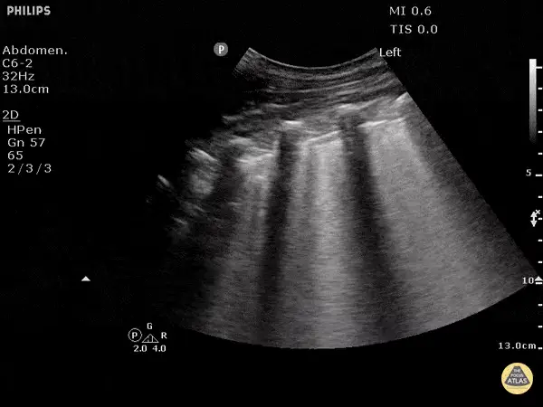

POCUS Tips › Lung
B-Lines and the Wet LungB-LINE
Separate cardiogenic edema from focal disease by pattern, symmetry and what the pleural line looks like.
Open the interactive view with the loop and quiz →
Where to put the probe
- Window
- Both hemithoraces, anterior first, then lateral and posterolateral
- Marker
- Patient’s HEAD (12 o’clock)
- probe
- linear or curvilinear
- preset
- lung
- depth
- 10–12 cm
Scan it properly
- Sample at least four zones per side; edema is a bilateral, comparative diagnosis, not a single-clip finding.
- Count B-lines within one intercostal space — three or more makes that space positive.
- Look at the pleural line itself: smooth suggests hydrostatic edema, irregular suggests pneumonia or ARDS.
- Note where the B-lines are: anterior in a supine patient is the abnormal territory, since bases go wet from position alone.
What you are looking at
- B-line
- Laser-sharp vertical band arising from the pleura, erasing A-lines, running off the bottom of the screen and moving with sliding.
- Second and third B-lines
- Three or more in one intercostal space makes the space positive — count them, do not just note that they are there.
- Pleural line
- Smooth and thin here, which fits hydrostatic edema; irregular pleura points to pneumonia or ARDS.
- Depth for artifact reading
- Curvilinear at 13 cm — enough depth to confirm the lines run all the way to the bottom of the sector.
Reading the pattern
| Pattern | Threshold | Fits with |
|---|---|---|
| Positive zoneone intercostal space | ≥ 3 B-lines | interstitial syndrome at that spot |
| Bilateral, symmetric, gravity-dependentsmooth pleura, anterior involvement | B-profile | cardiogenic pulmonary edema |
| Focal or patchy with spared areasirregular pleura, subpleural consolidation | focal B-lines | pneumonia, ARDS, contusion, infarct |
| Chronic diffuse B-linesunchanged over time, irregular pleura | baseline | pulmonary fibrosis — compare with the patient’s prior scans if you have them |
Don’t be fooled — pitfalls
- Not every vertical line is a B-lineA true B-line starts at the pleura, erases A-lines, reaches the bottom of the screen and moves with sliding. Short comet tails do not count.
- Over-gaining manufactures B-linesExcess gain turns haze into apparent artifact. Set gain so blood and air spaces read black, then count.
- One positive space is not a diagnosisA single wet interspace over the heart or in the axilla is common and meaningless in isolation.
- Fibrosis looks wet foreverIn a chronic interstitial disease patient, B-lines do not tell you whether today’s hypoxia is new.
Bad image? Fix it
- B-lines cut off mid-screenIncrease depth to 10–12 cm so you can confirm they run all the way down.
- Everything looks hazyTurn off unnecessary post-processing and reduce gain; artifact reading depends on a clean image.
- Hard to hold still on a tachypneic patientBrace your hand on the chest wall and record a short clip to review rather than deciding live.
- Deep zones inaccessible in a supine patientRoll the patient slightly or scan into the posterolateral (PLAPS) point from the side of the bed.
So what — what the finding changes
- Bilateral B-profile + plethoric IVCStop fluids. Edema pathway: non-invasive ventilation, nitrates, diuresis as clinically appropriate.
- Focal B-lines + feverTreat as pneumonia; look for consolidation and effusion in the same zones.
- Diffuse B-lines with a normal-looking heartConsider ARDS or another primary lung process rather than volume overload.
Educational use only. Not for diagnosis or treatment decisions — confirm findings with formal imaging and your own judgment. By Yonathan Daniel, MD · About · Last reviewed 2026-09-15.